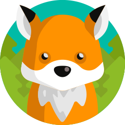

<!-- <div>
  <div *ngFor="let step of steps">
    
    <p>{{ step.title }}</p>
    <p>{{ step.description }}</p>
  </div>
</div> -->
<div class="title-container">
  <h1> {{project?.title}}</h1>
</div>
<div class="project-status-info" (click)="startProject()" *ngIf="!projectIsActive">
  <p>Projekt noch nicht gestartet!&nbsp;</p><p class="alert-link">Jetzt starten</p>
</div>
<div>
    <div class="section" *ngFor="let step of steps; let i = index">
      <div class="step-header">
        <p class="step-count">Schritt {{ i + 1 }}</p>
        
      </div>
      <h2>{{step?.title}}</h2>
      <p>
        {{step?.description}}
      </p>

    </div>
    <div class="section section-end">
      
      <h2 *ngIf="projectIsActive">Geschafft! Super!</h2>
      <h2 *ngIf="!projectIsActive">Möchtest du das Projekt starten?</h2>
      <button class="btn-green" (click)="startProject()" *ngIf="!projectIsActive">Projekt starten</button>
      <button class="btn-green" (click)="stopProject()" *ngIf="projectIsActive">Projekt beenden</button>
    </div>
</div>

